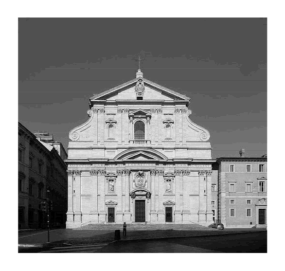
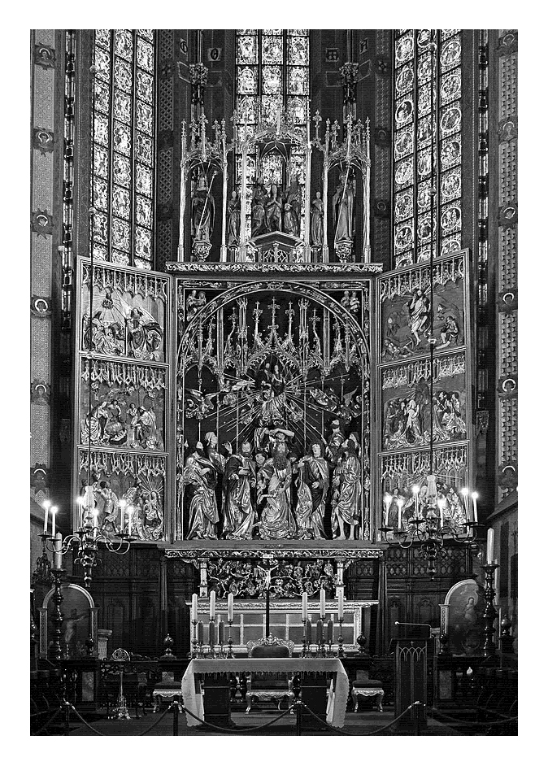
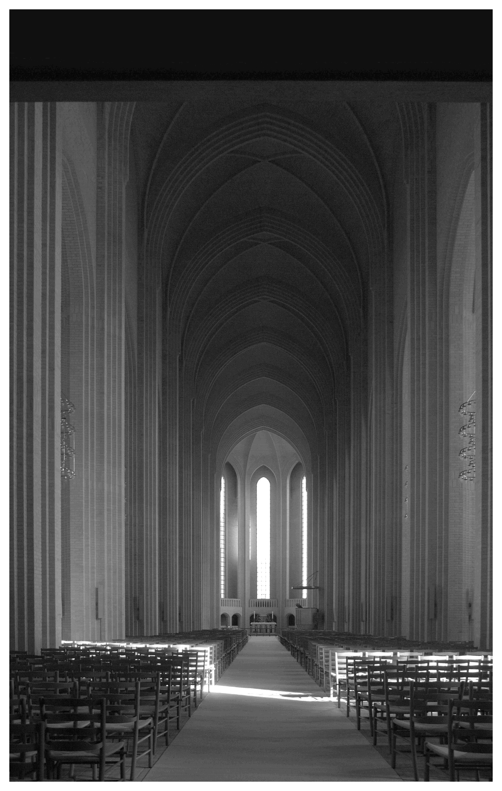
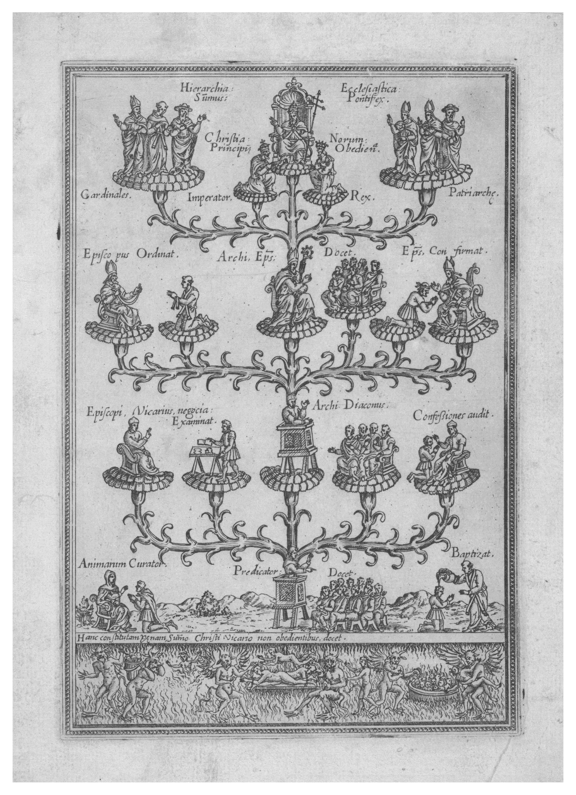
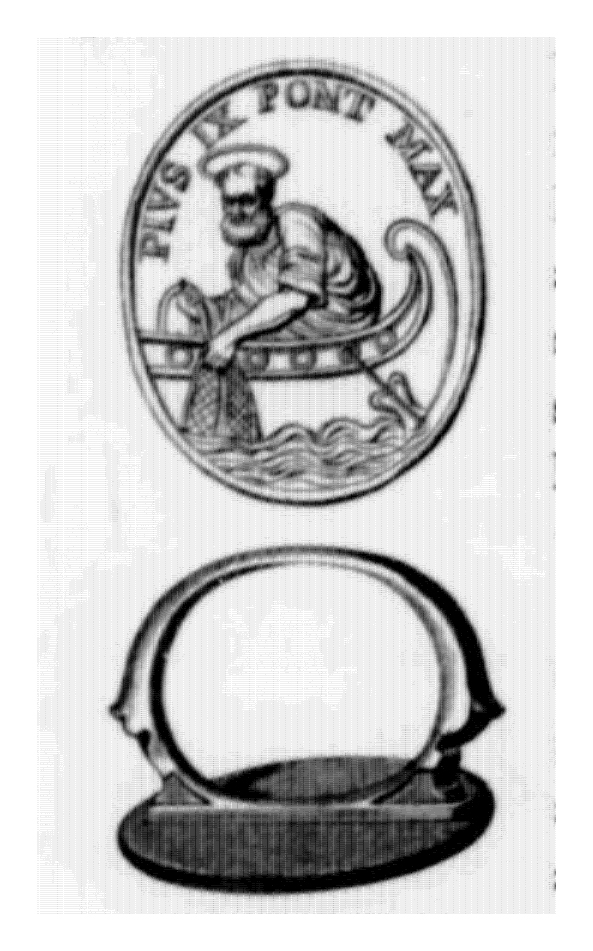
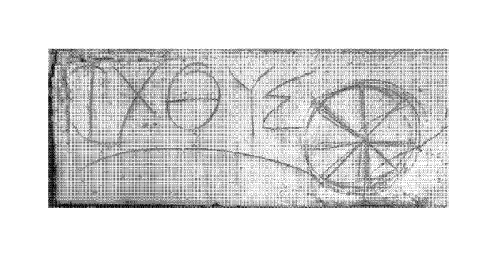
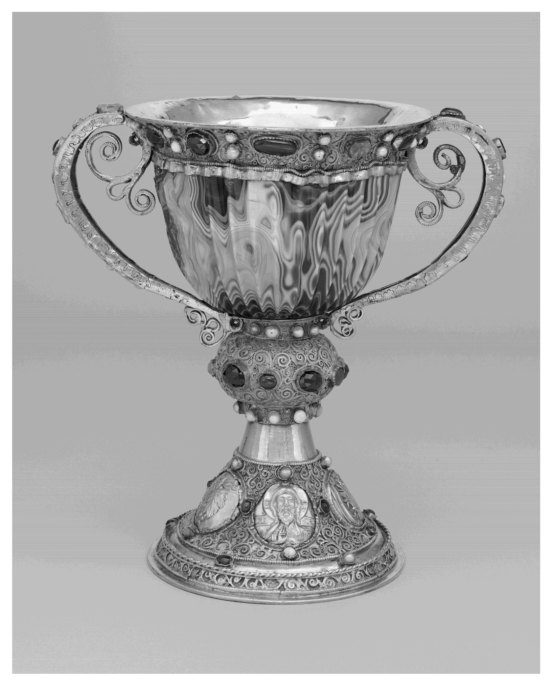

Abstract
Ornamentation has been a powerful tool in shaping societal structures and identities throughout history. This thesis explores how the Catholic Church employed ornaments to manipulate perception and enforce hierarchies. Their capacity to communicate authority in order to shape cultural and social identities within the institution.
Further, I will investigate the functionality of ornaments, with a special focus on objects used for rituals in the Catholic Church, as well as analysing the ring of fisherman and Chalice of the Abbot Suger of Saint-Denis.
Functionality of ornaments beyond their pure aesthetics. Last but not least, this work investigates the rhetorical functions of sacred ornaments. It examines how ornaments serve functional, symbolic, and spiritual purposes, changing ordinary objects into carriers of profound significance.
Introduction
In the beginning, I want to highlight that in this text, I am using the word "ornaments" to refer to decoration in art, architecture, and design, as well as objects of applied art such as jewellery, ceramics, and other products of crafts; the term "Catholic Church" as an institution, not religion. This text's purpose is to unfold the visual identity of religious institutions, not to harm anyone's beliefs.
Throughout history, art and architecture have sustained shifts in style, often leading to the transition and eventual loss of ornamentation. However, ornamentation remains deeply ingrained in the Catholic Church as a fundamental part of aesthetics, symbolism, and spiritual significance. Unlike secular movements such as modernism, brutalism, and constructivism, which have stripped away decorative elements [fig.1] [fig.1] The Museum of Modern Art, Warsaw in pursuit of minimalism or functionalism, Protest Churches focus on their relation with God rather than the distraction of rich ornamentation. Catholic spaces continue to embrace ornamentation as an essential visual language of faith and authority. [fig.2]  [fig.2] Church of the Gesù, Rome
I argue that ornamentation is far more than a stylistic choice - it is a mechanism of perception, power, and identity. In art, architecture, and design, ornaments shape how we see and experience the world. They dictate hierarchies, reinforce cultural identities, and even control societal narratives. Removing ornamentation is not just an aesthetic shift but a more profound loss of individuality and cultural meaning. This study highlights the profound connection between ornamentation, identity, and power structures. I will explore how ornamentation functions as a marker of status, authority, and ideological control, visually reinforcing hierarchies and societal norms. By closely examining sacred objects used in the Catholic Church, I aim to uncover their rhetorical and semiotic significance, demonstrating how these details are not just embellishments but foundational elements of religious experience and institutional influence.
Preface
I grew up in Poland, a country where Catholic traditions are deeply rooted into daily life. From an early age, I was captivated by the rich ornamentation in churches—the ornamental altars, complicated vestments, and sacred objects used in rituals. Their visual power fascinated me, but I also sensed that they carried deeper meanings beyond their beauty.
During my studies in graphic design, this fascination evolved into a more critical curiosity. I became interested in why ornamentation is so compelling and how it functions beyond decoration. This led me to question its symbolic significance, especially in religious contexts where it plays a crucial role in shaping perception, authority, and identity. I wanted to explore how sacred objects are designed not just to adorn but to communicate power and belief.
This thesis is the result of that exploration. By studying key religious artefacts, I aim to uncover the mechanisms through which ornamentation influences meaning and reinforces structures of authority.
Chapter 1: Loos and loos of ornaments
Sacred ornamentation refers to decorative elements used in religious architecture, art and objects that carry symbolic, spiritual, and cultural significance. These ornamental features are not only aesthetic additions but are integral to the religious and ritualistic functions of sacred spaces. They perform to improve the experience of the divine and reflect the spiritual hierarchy, religious beliefs, and the power structures inherent in religious practices. Religion ornaments often aim to connect the physical space with the divine, transforming an ordinary space into a sacred one.
„The non-essential portion of a building or artefact'. This was close to the opinion put forth a century ago by Loos in his essay "Ornament and Crime" [1] [1] Loos, Adolf. Ornament and Crime: Selected Essays, 1998. , in which he said that ornament was not only a waste of money and effort, it was downright amoral. Loos believed that the further man progressed in his evolution, the less he would need ornament.” [2] [2] Levit, Robert. 2014. "Contemporary Ornament: Return of the Symbolic Repressed." Utoronto, December. https://www.academia.edu/9582191/Contemporary_Ornament_Return_of_the_Symbolic_Repressed. Steve Shriver writes in his paper "A Short History of Ornament and Its Relationship to Narrative Painting."
Loos's critique of ornamentation, as expressed in Ornament and Crime, reflects a modernist ideology that associates progress with simplicity, efficiency, and the removal of decorative excess. He argued that ornamentation was an outdated remains, an obstacle to society's functional and moral progress. While his perspective influenced modernist architecture and design, it simply contrasts the persistent role of ornamentation in religious spaces, particularly within the Catholic Church.
Steve Shriver's analysis of ornamentation in narrative painting expands on the idea that ornament is more than an aesthetic choice; it is a means of communication. Shriver acknowledges that ornamentation has been a narrative device throughout history, expressing meaning and strengthening cultural and ideological frameworks. [3] [3] ibid. This aligns with the argument that sacred ornamentation in Catholicism is not simply decorative but a rhetorical tool that reinforces hierarchical structures, religious authority, and collective identity.
Unlike Loos's statement that ornament is an unnecessary luxury, I argue that ornamentation is an essential component of religious experience and institutional power in the Catholic Church. The elaborate establishment of altars, intricate vestments worn by clergy, and the use of gold and precious stones [fig.3]  [fig.3] Altarpiece by Veit Stoss, St. Mary's Basilica, Krakow are not only ornamentations but intentional choices that visually reinforce the authority and sacredness of the Church. These objects act as intermediaries between the material and the divine, creating an atmosphere of reverence and awe.
Additionally, the hierarchy within the Church is visually manifested through ornamentation. The Pope, bishops, and priests wear increasingly detailed vestments that represent rank and authority; these can be seen as symbol markers of ecclesiastical power. The use of rich materials, intricate embroidery, and specific colours in religious garments is not incidental; it separates the clergy from the laity, reinforcing a structured system of power maintained for centuries.
In addition, the Church's use of ornamentation is deeply tied to its ability to shape cultural
and social identities. The outstanding aesthetics of Catholic spaces
[fig.4]

[fig.4] Grundtvig's Church, Copenhagen
contrast with the minimalist approach of Protestant churches
[fig.5]
 [fig.5] Basilica of Saint Mary Major, Rome
, highlighting theological differences regarding the role of visual magnificence in worship.
While Protestant traditions often strip away ornamentation in favour of simplicity, reflecting
their emphasis on direct spiritual connection without intermediaries, the Catholic Church
embraces it as a means of sacred mediation.
Therefore, while Loos and modernist critics may have viewed ornamentation as a superficial
excess, ornamentation's role within the Catholic Church demonstrates its functionality beyond
aesthetics.
[4]
[4] Small, A.M. "Delight, the Function of Ornament," 2009.
https://repository.tudelft.nl/record/uuid:34038d98-31e8-40b7-afbe-4cf8405000a0.
Sacred ornamentation actively participates in religious rituals, shaping perceptions,
reinforcing hierarchy, and maintaining institutional authority. It is not a random addition but
an integral part of how the Church communicates power and sacredness, making it a crucial
element of religious experience rather than an outdated relic of the past.
[fig.5] Basilica of Saint Mary Major, Rome
, highlighting theological differences regarding the role of visual magnificence in worship.
While Protestant traditions often strip away ornamentation in favour of simplicity, reflecting
their emphasis on direct spiritual connection without intermediaries, the Catholic Church
embraces it as a means of sacred mediation.
Therefore, while Loos and modernist critics may have viewed ornamentation as a superficial
excess, ornamentation's role within the Catholic Church demonstrates its functionality beyond
aesthetics.
[4]
[4] Small, A.M. "Delight, the Function of Ornament," 2009.
https://repository.tudelft.nl/record/uuid:34038d98-31e8-40b7-afbe-4cf8405000a0.
Sacred ornamentation actively participates in religious rituals, shaping perceptions,
reinforcing hierarchy, and maintaining institutional authority. It is not a random addition but
an integral part of how the Church communicates power and sacredness, making it a crucial
element of religious experience rather than an outdated relic of the past.
This perspective questions the reductionist view that connects ornament with unnecessary extravagance, instead recognising it as a tool to provide meaning, identity, and power. The Catholic Church's ongoing use of ornamentation emphasises its power to shape belief, influence perception, and sustain hierarchical structures, making it an essential aspect of religious practice.
Ornamentation in the Catholic Church is more than solely a visual element. It is a carefully constructed system of visual hierarchy that reinforces religious authority and institutional order [fig.6]  [fig.6] The Hierarchu of the Church in a form of a tree, hell below . Sacred objects, vestments, and architectural elements do not merely serve aesthetic purposes; they create an environment where power is communicated through material richness and structured symbolism. These elements ensure that ecclesiastical hierarchy is understood and deeply ingrained in the worship experience, shaping how individuals interact with religious authority on a conscious and subconscious level.
Unlike secular movements that have moved toward minimalism, which we can observe based on art movements like cubism, suprematism, and constructivism. Whether through the ornate altars the detailed embroidery of clerical robes, or other accessories (like fishermen ring that I am gonna introduce in next chapter) ornamentation operates as a form of visual persuasion, establishing a sense of majesty and sacred legitimacy.
Chapter 2 : Significance of Signet
One of the oldest rituals related to the election of the Pope. The first record of mention was dated around the 13th century when Pope Clement IV mentioned it in his letter to his nephew. [5] [5] Waterton, Edmund. "XI.—On the Annulus Piscatoris, Or Ring Of the Fisherman." Archaeologia 40, no. 1 (January 1, 1866): 138–42. https://doi.org/10.1017/s0261340900004628.
The Fisherman's Ring (Anulus piscatoris) [fig.7]  [fig.7] Ring of The Fisherman of Pius IX is a gold or gold plated ring worn by the Pope, engraved with an image of Saint Peter casting his fishing nets.
At this point, it is also worth highlighting the significance of the fish as a symbol in early Christianity. The ichthys [fig.8]  [fig.8] An early circular ichthys symbol, created by combining the Greek letters ΙΧΘΥΣ, Ephesus. (or ichthus), derived from the Greek word ikhthū́s, is a simple design made up of two intersecting arcs, with the right end extending past the meeting point to form the outline of a fish [fig.9] [fig.9] Ichthys was adopted as a Christian symbol. . Scholars believe early Christians adopted this symbol as a secret identifier, allowing them to recognise one another in times of persecution. It functioned as a type of shibboleth—a subtle way to confirm a shared faith. [6] [6] Wikipedia contributors. "Ichthys - Wikipedia," February 15, 2025. https://en.wikipedia.org/wiki/Ichthys.
Now commonly referred to as the "Jesus fish," the ichthys first appeared in Christian art and writings during the 2nd century. By the late 2nd century, it had gained widespread use among Christian communities, and by the 3rd and 4th centuries, it had become a well-established symbol of the faith. [7] [7] Rasimus, Tuomas. "Revisiting the Ichthys: A Suggestion Concerning the Origins of Christological Fish Symbolism." Helsinki, December 4, 2024. https://www.academia.edu15685631Revisiting_the_Ichthys_A_Suggestion_Concerning_the_Origins_of_Christological_Fish_Symbolism.
"Initially used as a secret sign during the time when Christians were persecuted by the Roman authorities, the fish symbolised the mission of the group it represented and did so simply and effectively." [8] [8] Jowett, Garth S., and Victoria O'Donnell. Propaganda & Persuasion. SAGE Publications, 2014. p. 86
In the early history of Christianity, the ichthys symbol carried deep spiritual significance. It is believed that Christians used it as a secret sign to identify places of worship and fellow believers, especially during periods of persecution under the Roman Empire.
This ring has deep historical and symbolic significance within the Catholic Church. Initially, it was used as a seal for important documents and letters.
Over time, it became a powerful emblem of the papal office and authority. Upon the election of a new pope, a custom-made Fisherman's Ring is placed on his finger during the papal inauguration, symbolising his role as the successor of Saint Peter. While the Fisherman's Ring is no longer utilised as a seal, every newly elected pope is presented with a unique ring as a representation of his episcopal authority and set hierarchy of the most important person in the church institution. In 1842, the practice of using the ring as a seal was discontinued and replaced with a stamp.
Upon the pope's death, the ring is ceremonially destroyed by the Camerlengo (the official overseeing the Vatican between papacies). This ensures that no fraudulent documents are issued in the late pope's name. This event occurs before the cardinals officially commence the papal conclave to elect a new pope. The tradition of destroying a pope's ring was modified in 2013 when Pope Benedict XVI resigned after serving since 2005. Instead of breaking the ring, the cardinal camerlengo used a chisel to engrave a deep cross on its upper part. A new ring is then made for the next pope, continuing the tradition.
"Besides serving to adorn the body, rings have functioned as symbols of authority, fidelity, or social status." [9] [9] (Encyclopedia Britannica. "Signet Ring | Jewelry | Britannica," n.d. https://www.britannica.com/art/signet-ring.)
The exclusive use of an expensive metal such as gold in creating the Fisherman's Ring highlights its significance as a symbol of status, authority, and hierarchical distinction within the Catholic Church. Throughout history, gold has been associated with power, divinity, and wealth, often reserved for monarchs and religious leaders. Its durability and exclusives have made it a fitting material for objects of great spiritual and political importance. By crafting the Fisherman's Ring from gold or gold-plated metal, the Church underscores the supreme authority and sacred role of the pope, who is regarded as the direct successor to Saint Peter. The exclusivity of this ring further enhances its symbolic weight, as it is uniquely designed for each pope and cannot be worn by any other clergy member, regardless of their rank within the Church hierarchy.
This tradition reflects a broader historical practice in which precious metals and gemstones were used to signify social standing and divine favour. Kings, emperors, and high priests across various civilisations have long adorned themselves with gold to assert their legitimacy and emphasise their connection to the sacred. In the context of the Catholic Church, where spiritual leadership is deeply intertwined with institutional structure, the Fisherman's Ring functions as both an emblem of continuity and an affirmation of the pope's outstanding status. The thorough craftsmanship and individualised nature of each ring reinforce the idea that the pontiff's authority is not simply administrative but divinely ordained.
Additionally, the fact that this ring is produced by special order and is exclusively reserved for the pope serves as a powerful reminder of the rigid hierarchy within the Church. Unlike other ecclesiastical insignia, which may be shared among bishops and cardinals, the Fisherman's Ring belongs solely to the reigning pope, further distinguishing him from all other members of the clergy. This distinction is not only ceremonial but also functional, as the ring once held an essential role in authenticating official papal documents. Even though it is no longer used as a seal, its ceremonial importance remains intact, reinforcing the pope's singular authority over the Catholic Church.
Moreover, the ritual destruction of the Fisherman's Ring upon the pope's death or resignation further accentuates its exclusivity. By ensuring that no two popes share the same ring, this practice reinforces the idea that each pontiff holds a unique and unrepeatable position in the Church's history. The destruction of the ring also serves as a safeguard against fraudulent use, symbolising the conclusion of one papal reign and the preparation for another. The modification of this ritual in 2013, when Pope Benedict XVI's ring was defaced rather than wholly destroyed, highlights the adaptability of tradition while maintaining its underlying principle—each pope's authority is singular and non-transferable.
Ultimately, the use of gold and the exclusivity of the Fisherman's Ring serve as a visual and material representation of the pope's supreme status within the Church. As an institution that values continuity, symbolism, and hierarchical structure, the Catholic Church ensures that the Fisherman's Ring remains a powerful testament to the enduring significance of the papal office. The ring is not only a piece of jewellery but a deeply embedded symbol of religious authority, reflecting centuries of tradition and reinforcing the unique and exalted position of the pope in the spiritual and institutional framework of the Church.
The tradition of kissing the pope's or a bishop's ring dates back to the Middle Ages, where it served as a powerful symbol of reverence and submission to ecclesiastical authority. This ritual reinforced the hierarchical structure of the Church, visually and physically demonstrating the power dynamics between clergy and laity. By kissing the ring, individuals acknowledged the superior status of the pope, bishops, and cardinals, affirming their place within the Church's rigid order. During the pontificate of Pius X (1903–1914), this act took on an additional spiritual dimension, as it was associated with the granting of an indulgence when performed for a cardinal or bishop. This further cemented the act as both a religious devotion and a means of reinforcing clerical supremacy. However, by the time of Paul VI (1963–1978), the Church was undergoing significant changes, and he sought to modernise its structures and practices. [10] [10] ibid.
His reforms to the system of indulgences and efforts to diminish gestures of hierarchical submission were part of a broader move to present the papacy as more pastoral and less monarchical. As a result, he eliminated many formalities that emphasised the power structure of the Church, including the practice of kissing the pope's ring, hand, shoulder, cheek, or feet. This shift marked a departure from centuries-old traditions that had visually reinforced the authority of the clergy over the faithful.
Chapter 3 : The Chalice of Symbol
The Holy Chalice, often referred to as the Holy Grail in certain Christian traditions, is believed to be the vessel Jesus used during the Last Supper to share wine with his Apostles, symbolising his blood. The Synoptic Gospels recount how Jesus offered a cup of wine, calling it the covenant in his blood, an act that later became the foundation for the Christian sacrament of the Eucharist. This ritual, in which wine is consecrated and consumed from a chalice, remains a central practice in many Christian churches, signifying the believer's union with Christ and the redemption offered through his sacrifice.
Over time, the significance of the Holy Chalice extended beyond its biblical origins, becoming intertwined with medieval legend. In the late 12th century, the French writer Robert de Boron connected the Holy Chalice to the pre-existing myth of the Holy Grail, a mystical object from Arthurian literature that was often depicted as a source of divine grace and enlightenment. This idea was further developed in later medieval works, including the Lancelot-Grail (Vulgate) cycle, the Post-Vulgate cycle, and Sir Thomas Malory's Le Morte d'Arthur. Through these stories, the Holy Grail evolved into a powerful symbol of spiritual quest and divine favour, capturing the imagination of generations. [11] [11] Wikipedia contributors. "Ichthys - Wikipedia," February 15, 2025. https://en.wikipedia.org/wiki/Ichthys.
Beyond its legendary associations, the Holy Chalice has also been venerated as a tangible relic. Since the medieval period, a cup preserved in the Cathedral of Valencia, Spain, has been revered as the chalice used by Jesus at the Last Supper. Whether seen as a sacred Christian artefact or a mythical object of legend, the Holy Chalice continues to hold deep religious and cultural significance, inspiring devotion, artistic interpretation, and ongoing debate about its true origins and meaning. [12] [12] Encyclopedia Britannica. "10 Iconic Churches in Spain," n.d. https://www.britannica.com/list/10-iconic-churches-in-spain.
I will explore the rhetoric of the chalice by examining the Chalice of Abbot Suger of Saint-Denis [fig.10]  [fig.10] Chalice of the Abbot Suger of Saint-Denis, 2nd/1st century B.C. (cup); 1137-1140 (mounting) as a key example. This artefact not only serves as a functional liturgical vessel but also reflects the broader themes of power, wealth, and divine authority in the medieval Catholic Church. Through its materials, craftsmanship, and historical context, the chalice becomes more than just an object used in religious ceremonies—it is a symbol of both spiritual and earthly grandeur. By analysing the way Abbot Suger transformed an ancient sardonyx cup into a lavishly adorned Christian relic, I will demonstrate how the rhetoric of the chalice conveys messages of sacred legitimacy, divine presence, and the Church's influence in shaping religious and artistic traditions.
This remarkable chalice embodies the complex interplay of ancient craftsmanship, medieval religious devotion, and the rhetoric of wealth and power that has long been central to the Catholic Church's use of sacred objects. Originally carved in Alexandria, Egypt, the sardonyx cup showcases the skill of artisans who transformed raw stone into a refined vessel. The fluted patterns in the sardonyx, a rare and highly prized material, reflect both natural beauty and the human desire to shape the earth's treasures into objects of status and reverence. In its original context, this cup was a product of an advanced ancient civilisation. However, its journey did not end in Egypt. Instead, like many prized artefacts, it was absorbed into the expanding influence of medieval Christendom, where its meaning was reshaped to serve a new purpose.
By the 12th century, Abbot Suger of the abbey church of Saint-Denis, near Paris, sought to make his monastery a place of divine magnificence. For Abbot Suger, the visual majesty of liturgical objects was not merely ornamental but a crucial element of religious experience—a statement of God's presence made manifest through earthly riches. He commissioned goldsmiths to encase the ancient cup in gilded silver, an enhancement that elevated its status from an exotic artefact to a sacred vessel worthy of the Eucharist. The addition of pearls and gemstones reinforced the prevailing notion that divine power was best expressed through opulence, aligning with the Church's broader tradition of using material wealth to assert spiritual authority. [13] [13] Obelisk Art History. "Chalice of the Abbot Suger of Saint-Denis," n.d. https://www.arthistoryproject.com/timeline/middle-ages/gothic-art/chalice-of-the-abbot-suger-of-saint-denis/.
The base of the chalice further reflects this ideology, featuring a solemn image of Christ in a medallion, flanked by the Greek letters Alpha and Omega—symbols of Christ as the beginning and the end. Through this transformation, an object once tied to the wealth of an ancient empire became a tool of Christian ritual, seamlessly integrating colonial impulses into sacred practice. The acquisition and repurposing of luxurious materials, often sourced from distant lands, was a hallmark of medieval religious institutions, which framed their appropriation of global wealth as part of a divine mission. In this way, the chalice is more than a vessel for sacramental wine; it is an artefact of power, a product of cultural absorption, and a reflection of how material grandeur has long been interwoven with religious authority in the Catholic Church.
Conclusion
Throughout this thesis, I have explored the rhetoric of ornamentation in the Catholic Church, focusing on how sacred objects function beyond their aesthetic appeal. By analysing artefacts such as the Chalice of Abbot Suger of Saint-Denis and the Fisherman's Ring, I have demonstrated that ornamentation is not merely decorative but serves as a powerful tool for reinforcing religious authority, shaping identity, and communicating institutional power. These objects, through their material richness and intricate craftsmanship, act as visual and symbolic markers of hierarchy, divine presence, and theological significance.
The study of ornamentation within religious contexts reveals a broader understanding of how visual language influences human perception and societal structures. The Catholic Church has long utilised ornamentation to create an atmosphere of reverence, establish distinctions between clergy and laity, and reinforce its institutional legitimacy. Unlike secular artistic movements that have moved toward minimalism, the Church continues to keep traditions and embrace ornament as a means of sacred communication, proving its enduring significance in religious practice.
Moreover, this research highlights the intersection of material culture, theology, and power. The use of gold, gemstones, and elaborate design in sacred objects is not incidental—it reflects a carefully constructed system of visual persuasion. These objects command attention, evoke awe, and establish a substantial connection between the material and the divine. Their continued presence in religious rituals underscores the lasting impact of ornamentation on faith and authority.
Ultimately, ornamentation in the Catholic Church is far more than an embellishment—it is a mechanism that shapes belief, reinforces hierarchy, and sustains cultural traditions. By examining these sacred objects, we gain insight into the ways in which visual elements contribute to religious experience and institutional influence.
Bibliography
[1] Loos, Adolf. Ornament and Crime: Selected Essays, 1998. h
[2] Levit, Robert. 2014. "Contemporary Ornament: Return of the Symbolic Repressed." Utoronto, December. h
[3] ibid.
[4] Small, A.M. "Delight, the Function of Ornament," 2009. h
[5] Waterton, Edmund. "XI.—On the Annulus Piscatoris, Or Ring Of the Fisherman." Archaeologia 40, no. 1 (January 1, 1866): 138–42. h
[6] Wikipedia contributors. "Ichthys - Wikipedia," February 15, 2025. h
[7] Rasimus, Tuomas. "Revisiting the Ichthys: A Suggestion Concerning the Origins of Christological Fish Symbolism." Helsinki, December 4, 2024. h
[8] Jowett, Garth S., and Victoria O'Donnell. Propaganda & Persuasion. SAGE Publications, 2014. p. 86
[9] Encyclopedia Britannica. "Signet Ring | Jewelry | Britannica," n.d. h
[10] ibid.
[11] Wikipedia contributors. "Ichthys - Wikipedia," February 15, 2025. h
[12] Encyclopedia Britannica. "10 Iconic Churches in Spain," n.d. h
[13] Obelisk Art History. "Chalice of the Abbot Suger of Saint-Denis," n.d. h